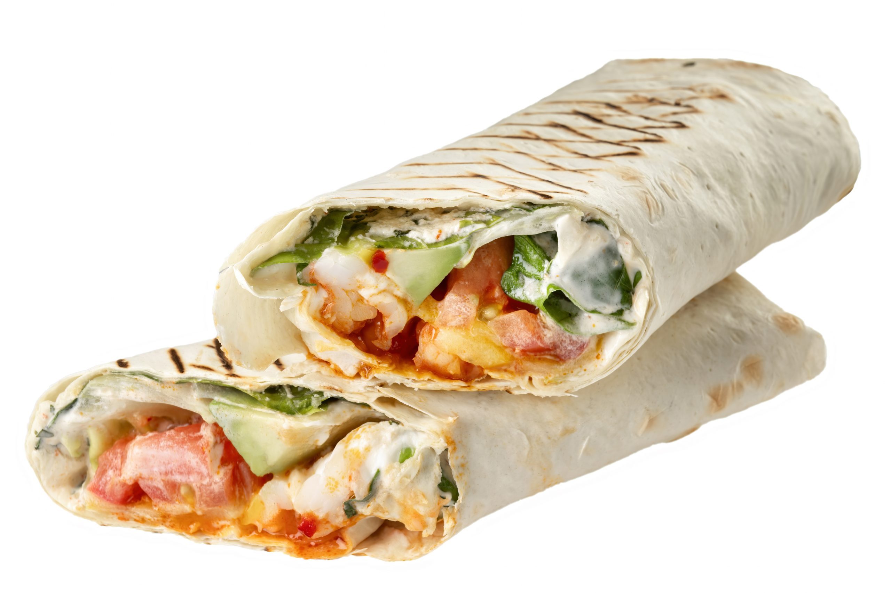

Шаурма как смысл жизни!

"Когда по твоему горлу стекает сок нежной шаурмы ты впадаешь в состояние эйфории!
Шаурма это и есть наслождение моментом
Ингредиенты
- Армянский лаваш
- Куриная грудка
- Помидоры
- Огурцы
- Мазик
- Сметана
- Чеснок
Инструкция к рецепту
- Нежно берешь ее в руки
- Начинаешь пробовать
- Ощущаешь сок который бежит по твоему горлу
- Пытаешься контролировать свои эмоции
- Идешь за добавкой
Вернуться наверх